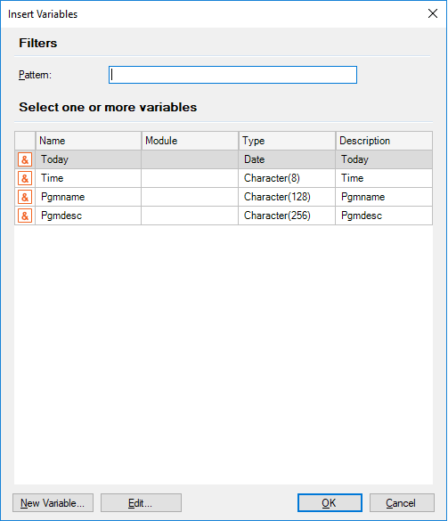

This dialog allows you to select and insert variables where you are positioned. Being in some section of an object (form, rules, events, layout, etc.) where you want to insert variables, you can select Insert / Variable in the GeneXus menu bar or you can press Ctrl+Shift+V and the following dialog will be opened:  Also, this dialog offers buttons to create and edit variables in the object where you are working. See alsoInsert Attribute/Variable Dialog
|
| Backlinks | |
| Insert Attribute/Variable Dialog | Variable Editor |